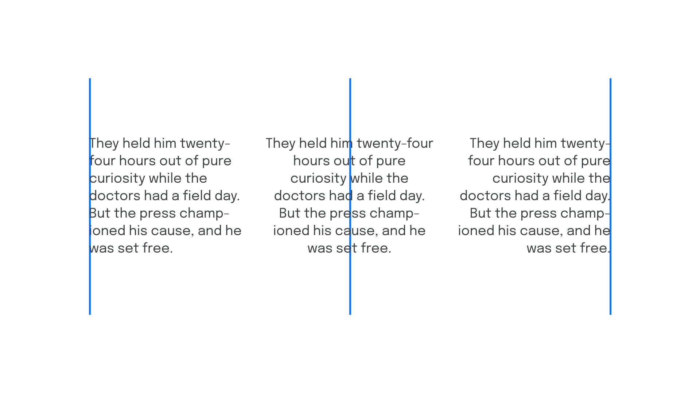
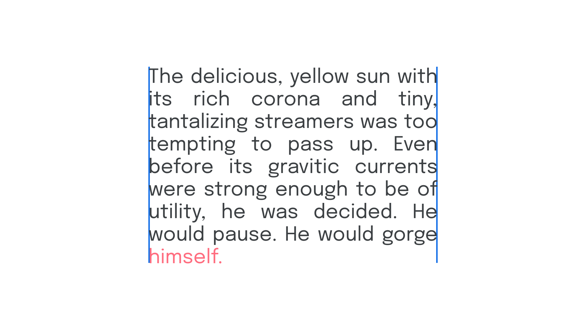

Alignment & justification
By Google Fonts Knowledge contributors · Google Fonts Knowledge.
Original article · Source on GitHub · CC BY-SA 4.0. Text, illustrations and existing credits reproduced from the licensed Knowledge repository. Open Shelf adapted the layout and links; these adaptations are also CC BY-SA 4.0. No endorsement implied.
In paragraphs of (western) text, alignment refers to the invisible vertical line(s) implied by a block of type, which aids readability. When type is left-aligned, each new line begins from the same point on the X axis.

If the text is right-aligned, the invisible vertical line sits to the right-hand side of the paragraph; if the text is center-aligned, the line sits in the center of the paragraph. It’s possible to have the text aligned to both left and right; this is known as justified text.

Because justification adds space between words, it often creates unsightly gaps and rivers in the text. This can be avoided with the liberal use of hyphenation to avoid word spaces that are too wide or too long.
Justified text can appear neater because of its uniform alignment. However, the last line of a paragraph in justified text will not be justified; this makes the occurrence of orphans more problematic, since they interrupt this perceived neatness.